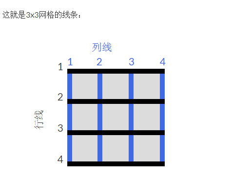

Css网格平常用到的时候还是蛮多的，并且十分的灵活的，但是我不太熟悉它的使用，而且总是忘记，所以在此稍微的记一下。
Grid
一、对网格容器进行设置
1.将HTML元素化为网格容器
display: grid;
你还可以将网格中的单元格也化成网格容器，形成网格中的网格。
2.在网格中添加行或列
grid-template-columns: 50px 100px auto 1fr
grid-template-rows:
向网格容器中添加列或者行,参数用来设置列的宽度或行的高度，参数的数量表示列或行的个数。
fr：将列或行设置为可用空间的一小部分，
fr单位会将剩余空间平均分为多个部分，举个例子：
1 | <div id=”container”> |
1 | #container{ |
第一列元素宽度为40px，剩下的60px，会被平均分为三份，每份20px，第二列占1份，20px，第三列占2份,40px。
auto：自动将列或行设置为其内容的宽度或高度，
%：将列或行调整为其容器的百分比宽度。
repeat() 函数
如果行数或列数过多，还可以用repeat() 函数来增加，例子：
grid-template-columns: repeat(2,20px 5rem) 50px;
即等同于:
grid-template-columns: 20px 5rem 20px 5rem 50px;使用repeat() 函数时可以使用auto-fill或auto-fit和minmax()来自动填充网格容器，形成灵活的布局：
（auto-fill和auto-fit的区别，这个细节笔者也没有弄太清楚，日后会继续补充）
grid-template-columns: repeat(auto-fill,minmax(60px 1fr));
网格容器的大小变化时，会同时拉伸单元格的大小，以适应网格容器大小，但是如果在minmax范围内可以塞下下一行的另一个单元格时，则不会拉伸。
例如：
1 | #container{ |
当container的宽度为100px时，每一行将会有两个单元格并且每个单元格的宽度将会被拉伸至50px，而当container的宽度为120px,每一行将会有3个单元格，每一个宽度为40px。
minmax() 函数
当网格容器的大小产生变化，还可以用minmax() 函数来限制单元格的大小，类似于fr：
grid-template-columns: 100px minmax(50px, 1fr);
3.在单元格之间创建间隙
Grid-column-gap: 10px;
Grid-row-gap:
Grid-gap: 10px 20px;
设置网格行和列之间的间隙
Grid-gap 如果只有一个参数10px，则会将行和列的间隙都设置为10px，如果有两个参数10px 20px，则会将第一个参数设为行的间隙，第二个设为列的间隙。
二、对单元格进行设置
1.通过网格线改变单元格
Grid-column: 1/3;
Grid-row:
网格线：

参数为从开始线到结束线，举个栗子：1
2
3#items{
grid-column: 1/3;
}
表示id为items的网格横跨第一条列线到第三条列线，占据两个网格。
2.对网格中的项目进行对齐
Justify-self: center;
Align-self: center;
Justify-self用于水平对齐，align-self用于垂直对齐。
默认情况下，此属性的值为stretch，这将使内容拉伸以填充单元格的整个宽度。此CSS Grid属性也接受其他值：
start：对齐单元格左侧，
center：对齐单元格中心，
end：对齐单元格右侧。
对网格容器中所有网格中的项目进行对齐（网格容器的属性）
Justfy-items: center; 水平对齐
Align-items: stretch; 垂直对齐
可接受参数与上两项（网格项的对齐属性）完全相同。
3.css网格区域
grid-template-areas用来合并网格形成区域并且命名。
grid-template-areas:
“header header header”
“advert content content”
“footer footer footer”;
上面的代码将前三个单元格合并为一个区域header，将底部的三个单元格合并为一个footer区域，并在中间行中生成两个区域; advert和content。
. 表示空单元格
Grid-area;
通过引用区域的名称可以将项目放入区域。1
#item1 {grid-area：header; }
另一种方式：
网格区域：水平线开始/垂直线开始/水平线结束/垂直线结束;1
#item1 {grid-area：1/1/2/4; }
项目将使用第1行和第2行之间的行以及第1行和第4行之间的行。


![[CSS]Grid表格总结](/medias/featureimages/15.jpg)